check picture
Description
Check a bitmap area of the AUT's current display against one or more stored baseline images. Result is Passed if the displayed image matches one of the baselines; otherwise Failed.Arguments
- window
- (Optional) TA name of the window.
- control
- (Optional) TA name of the control.
- name
- Identifying name of a regular or shared picture check, a collection of one or more baseline images to be used for comparison with the AUT display.
- question
- (Optional) A question for the tester who will use it, when warranted, to visually verify the contents of the image under test.
- left
- (Optional) Specifies the left border of a rectangular area (referred to as the rect area), relative to the left edge of the active UI element (which is a window, control, or the entire screen, depending on the presence or absence of values in the window and control arguments). The rect area determines the active area (see related notes below). Scanning for a match with the baseline image is limited to this area. (Units: pixels; default=0)
- top
- (Optional) Specifies the top border of the rect area, relative to the top edge of the active UI element. (Units: pixels; default=0)
- width
- (Optional) Specifies the width of the rect area. (Units: pixels; the default is that value which causes the right border of the rect area to coincide with the right border of the active UI element.)
- height
- (Optional) Specifies the height of the rect area. (Units: pixels; the default is that value which causes the lower border of the rect area to coincide with the lower border of the active UI element.)
Valid contexts
This action may be used within the following project items: test modules and user-defined actions.Notes
- Built-in UI actions applied to iOS devices specify screen coordinates in points rather than pixels. (For further details, refer to the built-in action get screen resolution.)
- This built-in action always applies a pixel-by-pixel image comparison technique. Keypoint detection is not available to check picture.
- check picture looks for an exact match between a stored baseline image and the designated active area of the AUT display. To search for the presence of a baseline image within the active area, use the action check picture exists.
- Note that if the referenced picture check holds multiple baseline images, each one is tested against the AUT bitmap until (and if) a match is found. Only a single “hit” is required for a match to be considered found.
- As a convenience when editing, you may drag the appropriate picture check node from the Picture Checks folder (in the TestArchitect explorer tree) into this action's name argument.
- A normative outcome of check picture execution is one of
the following:
Note that Failed and Warning results are tentative, and that each one is associated with an unverified picture check. Upon completion of the test run, each unverified picture check may be manually accessed and resolved in a way that modifies the final check result. (Alternatively, no further action need be taken on an unverified picture check – that is, you can simply allow its associated test result to stand.)
Check result Condition Description Passed pictures match Referenced picture check holds a baseline image that matches the displayed test image. Failed with unverified picture check no match Referenced picture check holds no baseline image that matches the displayed test image. Warning with unverified picture check missing picture check The check picture's name argument specifies a picture check that does not exist. - Results with unverified picture
checks may be resolved at test run completion by means of a Picture
Check dialog box, of which there are two varieties:
- Failed results with unverified picture checks can be resolved through the Picture Check - Changed Picture dialog box, which allows for the possibility of adding the captured test image to the associated picture check as a new baseline picture.
- Warning results with unverified picture checks are resolvable through the Picture Check - New Picture dialog box, which allows for adding a new picture check (with its name taken from the name argument), with the captured test image as its baseline picture.
- It should be noted that the suggested method for adding picture checks and baseline pictures is to do it “offline”, by means of the Picture Capturing Tool option available on the Picture Checks folder in Solution Explorer . Adding baseline pictures as a consequence of unverified picture checks during testing is primarily intended for cases of unexpected check picture failures occurring during testing.
- The means by which the Picture Check dialog boxes are presented upon test completion is determined by the built-in setting verify picture. With verify picture set to yes, (verify mode) any unverified picture checks occurring during the test automatically prompt a series of Picture Check dialog boxes to appear upon completion of the test run session. With the setting set to no (non-verify mode), the dialog boxes do not automatically appear, but can be summoned by manual means subsequent to the test session. Non-verify mode (setting verify picture to no) is recommended for unattended serial test runs under batch file control; this avoids the possibility of some tests inhibiting subsequent ones from running due to the need for manual intervention.
- An unverified picture check remains unverified until one of two things occurs: its status is resolved via a Picture Check dialog box (discussed above), or the associated local Results item is moved to the repository. Once a Results item is moved to the repository, tentative Failed and Warning results associated with unverified picture checks are locked in as Failed and Warning, respectively, and any unverified picture checks are discarded.
-
This action is applied to that part of the captured bitmap identified as the active area, with the remainder of the image ignored. The active area is determined by the four arguments (left, top, width and height) that define the rect area. To begin with, window and control determine the active UI element, which can be a control, window, or the full screen, as follows:
window argument control argument active UI element is... omitted omitted entire screen (i.e., entire captured test image specified omitted entire application window specified specified specified control With the active UI element established, the optional rect area, if defined, specifies a rectangular area relative to the top-left corner of the active UI element. (If none of the four rect arguments are specified, the active area is the active UI element itself.)
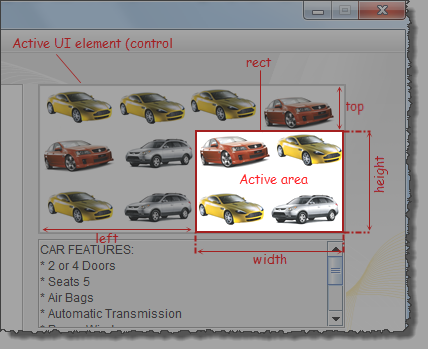
The above figure illustrates the active area that applies when both the window and control arguments have been specified, establishing the picture control (with the 12 cars) as the active UI element. The rect area itself, specified by left, top, width and height, is the active area.Important: The rule to determine the active area of the picture check built-in action is different from the one of other Picture Handling built-in actions, such as, check picture exists, click picture. - In all cases, the
rect area itself, if specified, is the active area.
The following three images illustrate the cases for how the active area is
determined when the four values (left, top,
width, height) of the
rect area are specified.
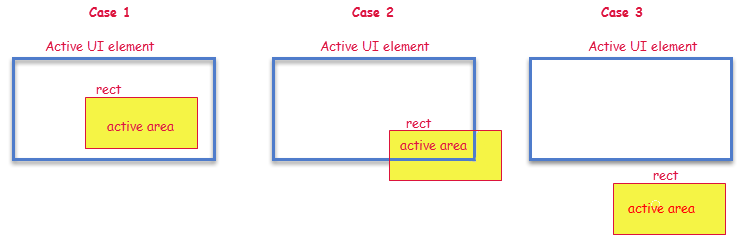
The general rule for determining the active area is as follows:rect area: resulting active area: not specified the active UI element overlaps the active UI element the rect area no overlap with active UI element the rect area - Android: This built-in
action, when applied to a connected Android device,
requires that the TestArchitect Agent service be running. Note also that, if
and when an Android device is restarted, TestArchitect Agent is
then stopped. Should this be the case, it is essential that you reactivate the service
by observing the following steps:
- Connect the Android device to the test controller through a USB cable (not Wi-Fi), if not already so connected.
- Open the Android Instrumentation Tool dialog box.
- Click the Refresh devices list button.
- This action supports the <ignore> modifier. If the string
<ignore>is present as the value of any of the arguments, or any argument contains an expression that evaluates to<ignore>, the action is skipped during execution.
Applicable Built-In Settings
The following settings are applicable to this action: case sensitive,verify picture, remove double quotes from cells, standard ASCII only, object wait, window wait, load invisible controls.
Example
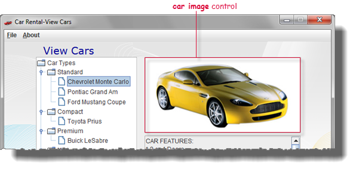
Our last step in the action lines is to verify that the correct picture is displayed:
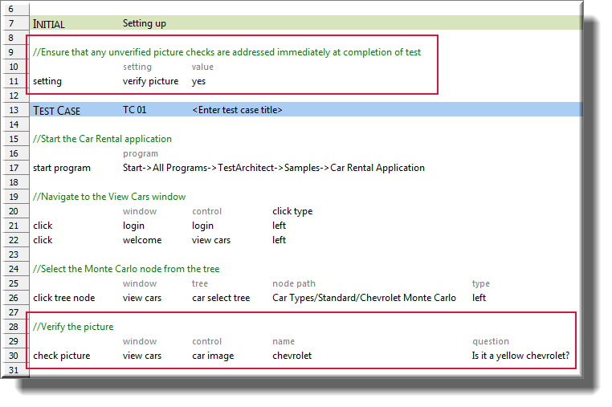
Verifying the picture
Note that the check picture action line in the test assumes that we already have a picture check with a name of chevrolet in existence. In this case, we don't – at least not yet. But as mentioned, when a check picture execution runs up against a nonexistent picture check, the result is a suppressed warning and creation of an unverified picture check. And since the built-in setting verify picture has been set to yes, the unverified picture check prompts a Picture Check – New Picture dialog box to appear upon completion of the test:
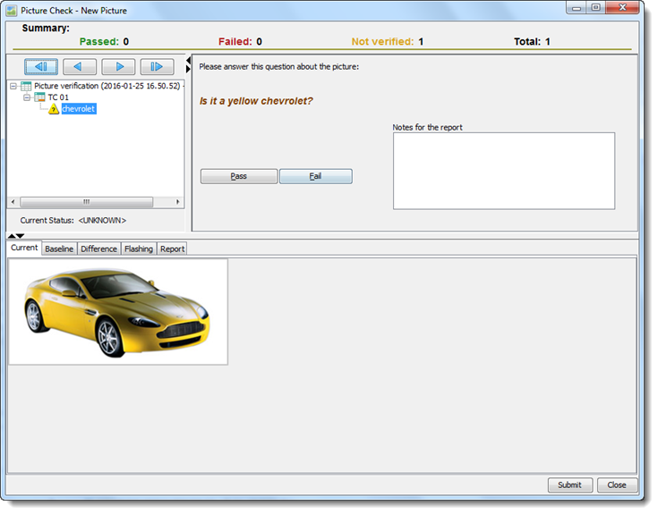
- if the correct picture is not displayed in the Current tab, click Fail.
- if the picture is correct, click Pass.
As the picture is indeed correct, we would expect our tester to click Pass, which has the following effects:
- The newly-captured picture is saved as a baseline reference in the
chevrolet picture check, to be available for future test executions.
The picture now becomes visible in the Baseline tab on the
Picture Check – New Picture dialog box.
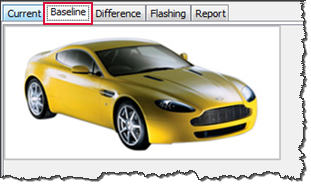 - The icon for the node in the picture explorer tree (top-left of the dialog box) is
changed to a green check mark , indicating a passed
picture check.
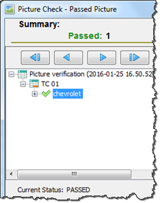
Finally, clicking Submit completes the picture verification.
- Whichever option (that is, Pass or Fail) is selected in this dialog box is stored only in temporary memory, and is not saved to the repository, until you click the Submit button.
- The Close button discards the changes (if any) and then closes the dialog box.
-
Multiple baselines:
A picture check is not limited to a single baseline image. Instead, one picture check can store multiple baselines. This is important for those cases in which more than a single bitmap presented by the AUT may be considered acceptable for a given picture check. (Note that one common reason for a picture check having multiple baselines is that a given picture file may be rendered in slightly different ways on different hardware.) When multiple baselines exist for a given picture check, TestArchitect's criterion for a passed check is that any one of the stored baselines match the test picture.
Subsequent check picture executions - matches and non-matches
After storage of the baseline picture (or, eventually, multiple baseline pictures) in the chevrolet picture check, we may continue to perform test runs. Subsequent executions of the check picture at line 30 perform a capture of the AUT image, then compare it with the picture check's baseline(s). If the automation finds a match, the result is Passed, with no manual verification required.
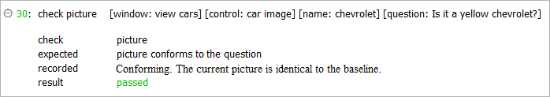
If, on the other hand, the newly captured test image does not match the baseline, a new dialog box, Picture Check – Change Picture, appears upon test completion:
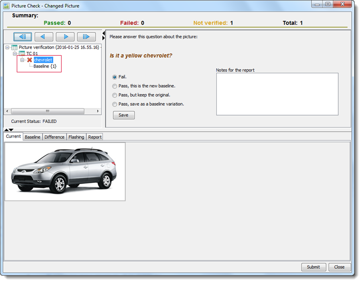
- Fail: Report this check as having Failed. (That is, the image under test is not one that the AUT was expected to display, nor should have displayed, at the time of execution of this check picture action.)
- Pass, this is the
new baseline: Report this check as Passed,
remove all existing baseline images, and save the test image as the
baseline.Warning: If the current picture check has multiple baseline pictures, this option removes all of them.
- Pass, but keep the original: Report this check as Passed, but keep the original existing baselines. The test image is discarded.
- Pass, save as a baseline variation: Report this check as Passed, and save the test image as an additional baseline.
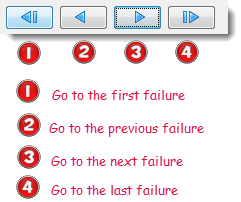
Automation mode
It has been mentioned that test runs with picture checks may be run in either an automated or semi-automated mode. So far, we have looked at semi-automated test runs, in which manual intervention is required at the end of each run. In a production test environment, it is frequently necessary to run tests, often in series, without stopping for human input.
In a production test environment, it is frequently necessary to run serial tests under batch control, without stopping for human input. Under batch file control, however, each test module in a serial batch run is invoked as a separate test run session. The upshot is that, when in semi-automated mode, any single test module with unverified picture checks results in a requirement for human intervention when that test module completes its execution, regardless of whether it is part of a serial test run. To avoid this interruption, ensure that such batch runs are performed in automated mode, thus allowing you to determine if and when manual picture check verifications take place.
Accessing the Picture Check dialog box
We have seen how the Picture Check dialog box is the means by which new images are designated as baselines. We have also seen that the Picture Check dialog box appears automatically at the end of a semi-automated test run, and does not appear at all after an automated test run.
The obvious question here is "What happens when a new image – a baseline candidate – is encountered during an automated run? Is there any way to tell the system to accept that image as a baseline after the fact?". The answer is Yes.
- As with semi-automated runs, this is achieved by accessing the Picture Check dialog box after the test run has completed.
- As with automated runs:
- For each results report for a test containing picture checks, TestArchitect maintains records, including images
captured from the AUT of every unverified picture check that was conducted during
the test run. The icon for the test result that has unverified picture checks has a
U overlaid on it. Once you resolve the unverified picture checks. the test
result loses its designation.
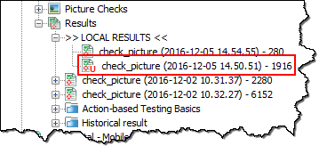Tip: In order to resolve unverified picture checks, refer to this topic. - An unverified picture check is one that:
- failed to find a match at the time of a check picture execution, either due to a non-existing named picture check or non-matching pictures, and
- has not yet had a human review and resolve the check (by selecting a Pass or Fail option) through its associated Picture Check dialog box.
- For each results report for a test containing picture checks, TestArchitect maintains records, including images
captured from the AUT of every unverified picture check that was conducted during
the test run. The icon for the test result that has unverified picture checks has a
U overlaid on it. Once you resolve the unverified picture checks. the test
result loses its designation.
Example
Action Lines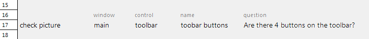
The checked image appears as follows:
At the first run if there is no retained image for this check (that is, no baseline), the Picture Check dialog box appears upon completion of test execution:
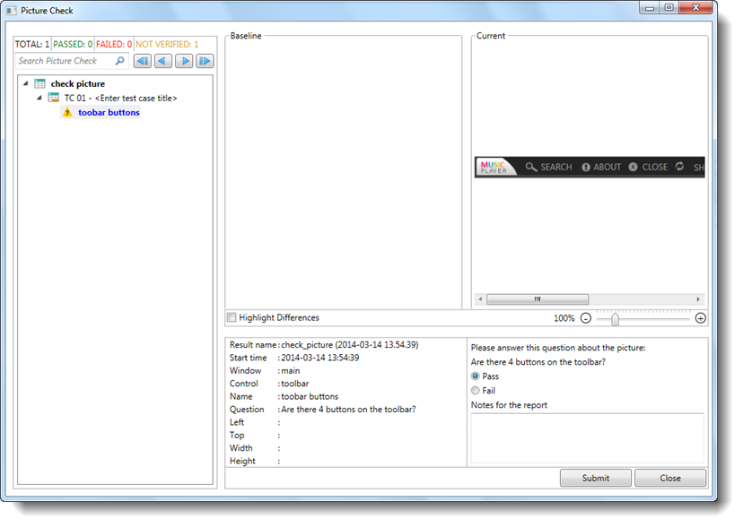
- In the Picture Check dialog box, there are three possible icons
representing picture checks and their current status:
Passed picture check Failed picture check Unverified picture check - The question, "Are there 4 buttons on the toolbar?", is taken from the
question argument passed to the check picture
action:
- If the correct image is not displayed in the Current panel, tester selects the Fail radio button, then clicks Submit.
- If the image is correct, tester selects Pass, then clicks Submit.
- The newly-captured picture is saved as a baseline reference for future test
executions. It becomes visible in the Baseline tab on the
Picture Check dialog box.
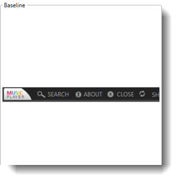 - The icon for the node in the picture explorer tree (top-left of the dialog box) is
changed to a green check mark , indicating a passed picture check.
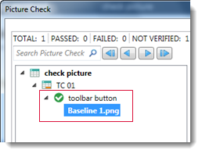
Finally, clicking Close closes the Picture Check dialog box and completes the picture verification.
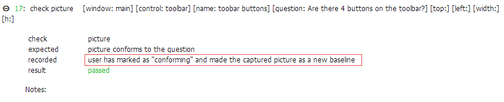
A picture check is not limited to a single baseline image. Instead, one picture check can store multiple baselines. This is important for those cases in which more than a single bitmap presented by the AUT may be considered acceptable for the picture check, as it is often the case that a given picture file may be rendered with different resolutions on different sets of hardware. When multiple baselines exist for a given picture check, TestArchitect's criterion for a passed check is that any one of the stored baselines match the presented picture.
check picture test execution
After storage of the baseline picture (or multiple baseline pictures) in the given picture check, you can perform test runs. Subsequent executions of check picture that specify that picture check perform a capture of the AUT image, then compare it with the picture check's baseline(s). If a match is found, the result is Passed, with no need to verify the test image visually.
If, on the other hand, the newly captured test image does not match the baseline, the Picture Check dialog box appears:
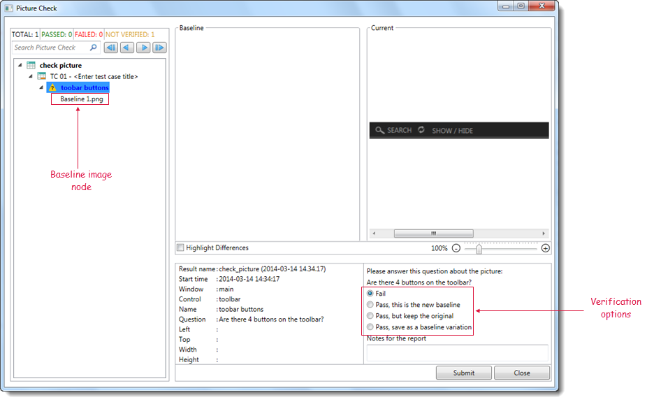
- Fail: Report this check as having Failed. (That is, the image under test is not one that the AUT was expected to display, nor should have displayed, at the time of execution of this check picture action.)
- Pass, this is the new baseline: Report this check as Passed, remove all existing baseline images, and save the test image as the baseline.
- Pass, but keep the original: Report this check as Passed, but keep the original existing baselines. The test image is discarded.
- Pass, save as a baseline variation: Report this check as Passed, and save the test image as an additional baseline.
- If you select a baseline image node, the Pass, overwrite this baseline check box appears. Selecting this check box reports the check as Passed and replaces the selected baseline node with the current test image.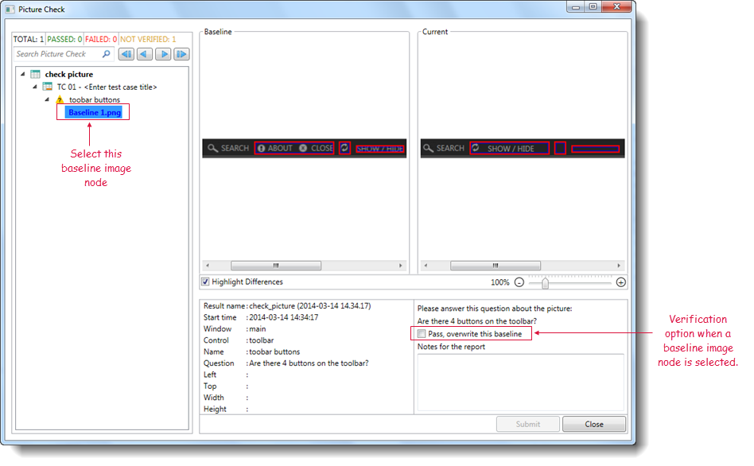
- To highlight differences between the baseline picture against the current picture, select the Highlight Differences check box.
Finally, click the Submit button to store your decision on the image verification, then click Close to close the Picture Check dialog box.
Non-verify mode
It has been mentioned that test runs with picture checks may be run in either semi-automated or automated mode. So far, we have looked at test runs in semi-automated mode, in which manual intervention is required at the end of each run.
In a production test environment, it is frequently necessary to run tests, often in series, without stopping for human input.
To set up test runs in automated mode, refer to the verify picture built-in setting.
Accessing the Picture Check dialog box
We have seen how the Picture Check dialog box is the means by which new images are designated as baselines. We have also seen that the Picture Check dialog box appears automatically at the end of a test run in semi-automated mode, and does not appear at all after a test run in automated mode.
The obvious question here is "What happens when a new image, one that fails to match any baseline of the picture check, is encountered during an automated test run? Is there any way to tell the system, after the fact, to accept that image as a new baseline?". The answer is Yes, and this applies to test runs in both verify and non-verify modes.
- For test runs in semi-automated mode, this is achieved by accessing the Picture Check dialog box after the test run has completed.
- For test runs in automated mode:
-
For each results report for a test containing picture checks, TestArchitect maintains records, including images captured from the AUT of every unverified picture check that was conducted during the test run. These unverified picture checks are stored in the Unverified Results node.
-
An unverified picture check is one that:
- failed to find a match at the time of the test, either due to a non-existing baseline or non-matching image, and
- has not yet been reviewed by a human to determine the proper course of action.
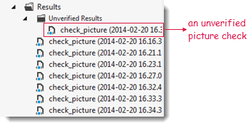
- In order to resolve unverified picture checks, refer to Resolving unverified picture checks.
-
-
Restriction: You will not be able to verify test results if you have executed tests from the command line or Microsoft Test Manager.
Share Via...